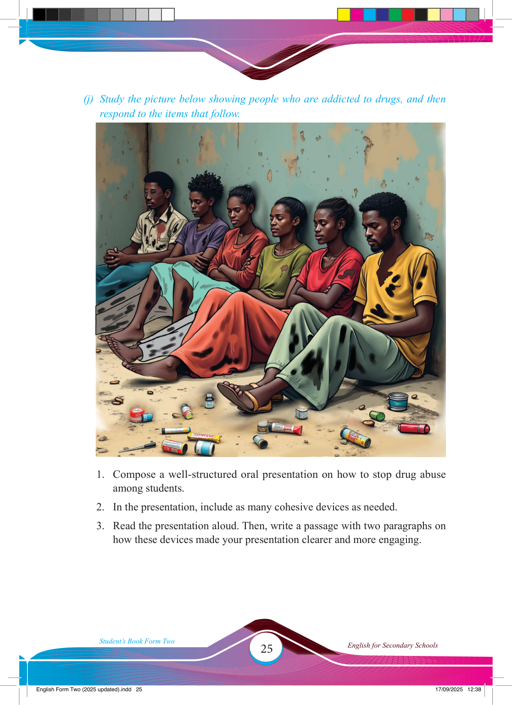

25
Student’s Book Form Two
English for Secondary Schools
(j) Study the picture below showing people who are addicted to drugs, and then respond to the items that follow.
1. Compose a well-structured oral presentation on how to stop drug abuse among students.
2. In the presentation, include as many cohesive devices as needed.
3. Read the presentation aloud. Then, write a passage with two paragraphs on how these devices made your presentation clearer and more engaging.
17/09/2025 12:38